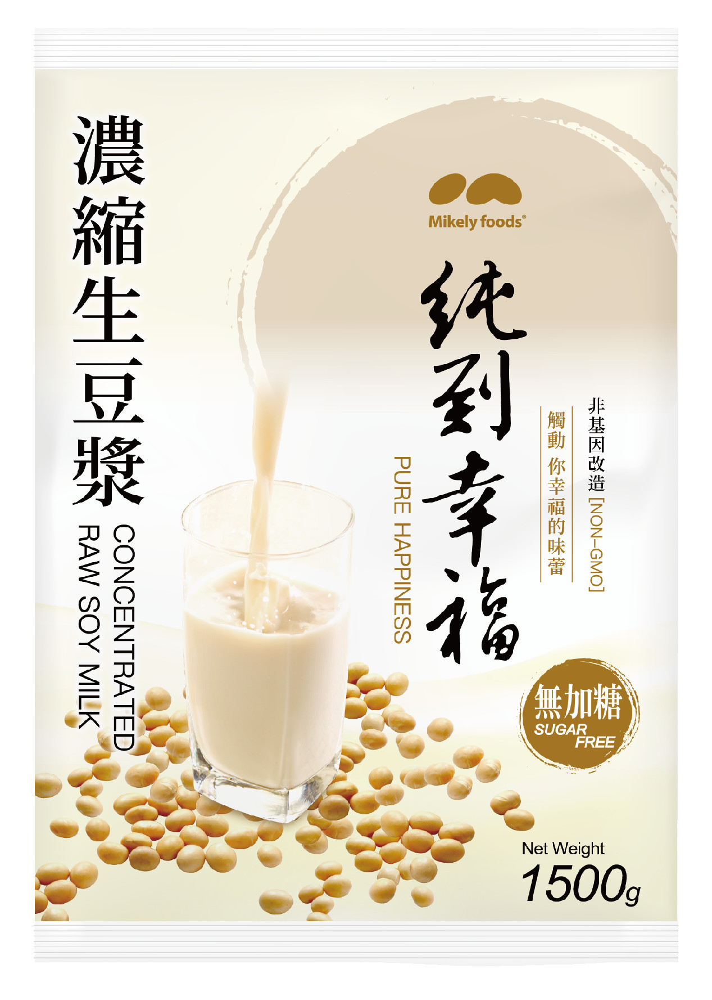
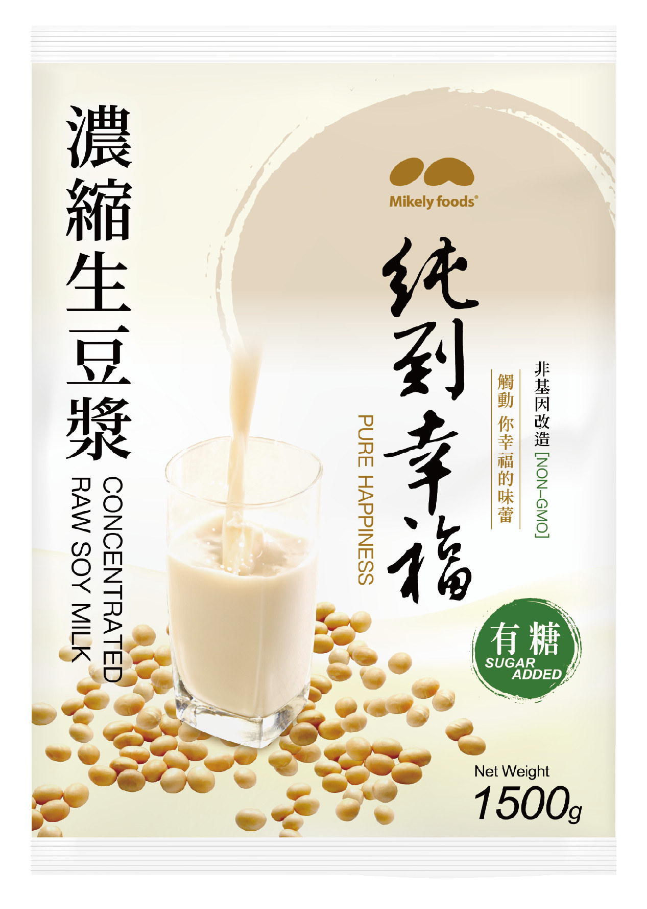
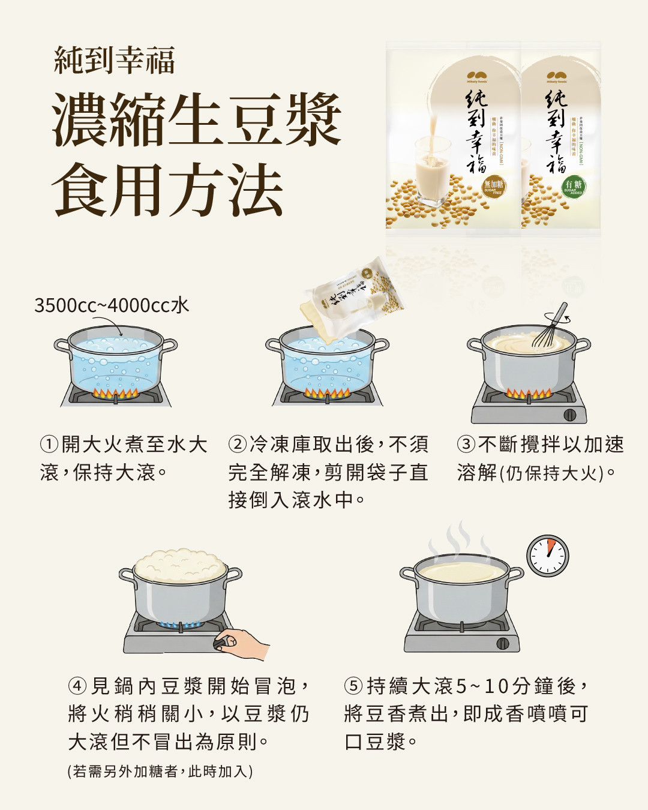

純到幸福 冷凍濃縮生豆漿
觸動你幸福的味蕾。非基改黃豆研磨、高溫殺菌後急速冷凍，專為早餐店與餐飲業設計。


NON-GMO有糖無加糖1500g／包-18℃ 冷凍
產品規格
| 品名 | 純到幸福 濃縮生豆漿（業務用） |
|---|---|
| 口味 | 有糖／無加糖 |
| 容量規格 | 1500g／包 |
| 箱入數 | 待補 包／箱 |
| 成分（無加糖） | 水、黃豆（非基因改造） |
| 成分（有糖） | 待補 |
| 黃豆產地 | 加拿大、美國（非基改指定豆種） |
| 保存方式 | -18℃ 冷凍保存 |
| 保存期限 | 一年（有效日期標示於封口） |
| 每包可煮出 | 加水 3500～4000cc，約 待補 公升／待補 杯 |
| 配送 | 工廠直營，專人專車冷鏈物流送達 |
食用方法
免解凍，整包直接下鍋

- 開大火煮水3500～4000cc 水置入鍋中，開大火煮至水大滾，保持大滾。
- 直接倒入冷凍庫取出後，不須完全解凍，剪開袋子直接倒入滾水中。
- 不斷攪拌不斷攪拌以加速溶解（仍保持大火）。
- 調整火力見鍋內豆漿開始冒泡，將火稍稍關小，以豆漿仍大滾但不冒出為原則。若需另外加糖，此時加入。
- 大滾 5～10 分鐘持續大滾 5～10 分鐘，將豆香煮出，即成香噴噴可口豆漿。
重要：這是「生」豆漿，一定要煮到完全滾透才能飲用。冒泡不代表已經煮熟（這叫做「假沸」），請務必持續大滾。為什麼？
照片待補：
用生豆漿做的豆花成品
用生豆漿做的豆花成品
一包兩用
不只煮豆漿，還能做豆花
生豆漿少加一點水煮滾，就是做豆花用的濃豆漿。加入石膏粉或內酯，20 分鐘就能做出滑嫩豆花，早餐店、飲料店多一項高毛利甜點。
- 石膏豆花：每 1000ml 濃豆漿約 2～3g 石膏粉
- 內酯豆花：最穩定，適合營業用分杯
- 豆漿、豆花、豆漿豆花，同一包生豆漿搞定
適合誰
這些店家都在用
01
中西式早餐店
每天固定供應豆漿，取代自己磨豆。
02
連鎖餐飲
各分店口味統一，總部好管理。
03
飲料店・豆漿專賣
作為豆漿、豆奶飲品的基底。
04
團膳・學校・機關
大量供應，一次煮一大鍋。
- ISO 22000 國際食品安全管理系統認證
- HACCP 食品安全管制系統
- SGS 黃豆非基因改造檢驗（純到幸福系列）
- Intertek 全國公證：黃豆黃麴毒素及農藥殘留檢驗
- Intertek 全國公證：防腐劑檢驗、微生物檢測
- 富邦產品責任險 新台幣 2,000 萬元